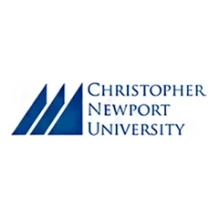
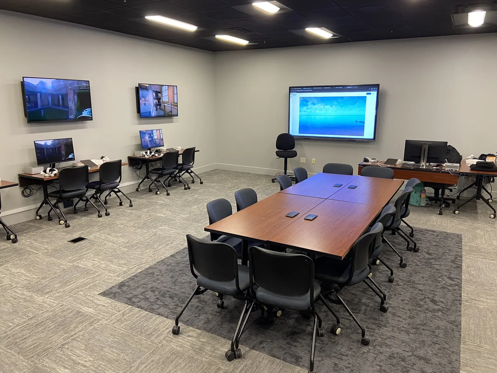

Christopher Newport University
Arts and humanities, made for XR. A national model built in months, not years.
6 moplan to launch
4/4faculty projects deployed
90 daysto a NOAA partnership

- Client
- Christopher Newport University, with Apple and Insight Public Sector
- Company
- Ruscella Immersive · 2025
- Role
- Chief Creative Officer and Co-Founder
- Team
- [Team size]
- Timeline
- 6 months, plan to launch
- Discipline
- Lab strategy and design, faculty workshops, content creation

Challenge
CNU wanted arts and humanities faculty, not computer science, to lead immersive learning. There was no strategic framework, $150K to deploy in four months, and faculty ranging from expert producers to self-described beginners.
Solution
- Foundation: assessment, roadmap, lab design and build. A former computer lab became a themed “time-ship” that’s now on the campus tour.
- Hardware procured and configured with Apple and Insight Public Sector.
- Activation: six faculty, eight weeks, starting with 360° video. Every participant shipped a finished experience in their own discipline.
My role
- Lead designer for the lab layout and equipment procurement
- Led the immersive learning creation process, guiding faculty to create immersive experiences
- Project management
Highlights

Results
6 mofrom plan to launch
6new XR creators on campus
4/4faculty projects deployed
90 daysto a federal partnership with NOAA
- Four disciplines, four published experiences: history, English, music and classics.
- Students spend twice as long with the music work as with any other assignment format, and call the Pompeii field trip the most memorable moment of their semester.
- CNU became the flagship lab of the NEXTWave Network.
“I came into this as someone who jokes that I can barely turn on a computer. By week six I had filmed on location, edited spatial audio, and published an immersive experience my students could step inside.”Christopher Newport University, Institute for Public Humanities